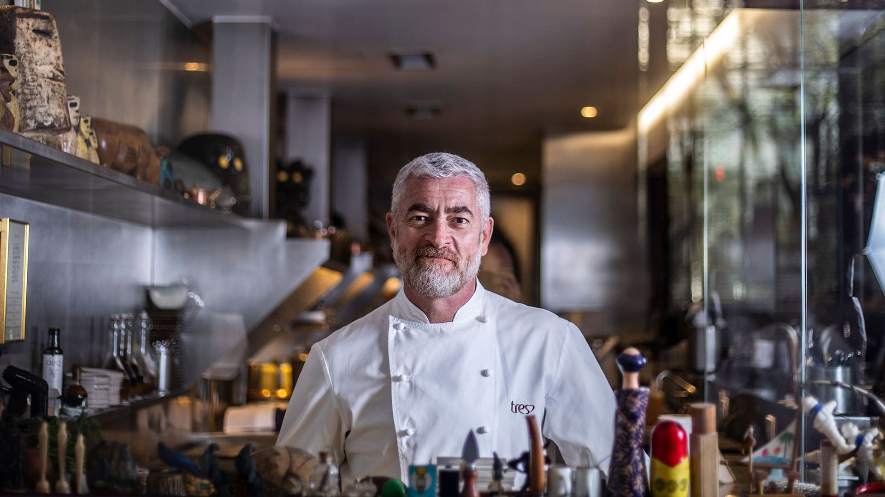

Alex Atala , nacido el3 de junio de 1968en São Paulo , es un chef brasileño de origen libanés. Dirige el restaurante DOM en São Paulo . Enabril 2012El restaurante DOM se clasificó 4 º entre los mejores restaurantes del mundo por S. Pellegrino de los 50 mejores restaurantes del mundo , publicado por la revista restaurante . Su establecimiento también ostenta el título de Mejor Restaurante Acqua Panna de Sudamérica ("el mejor restaurante Acqua Panna de Sudamérica"). Es conocido por la forma en que adapta los platos tradicionales brasileños aplicando técnicas culinarias francesas e italianas a los ingredientes brasileños locales. Alex Atala también presenta un programa de televisión en el canal de televisión brasileño GNT . Además, Atala fundó en 2015 el Instituto Atá , registrado como propiedad no comercial en el Instituto Brasileño de Propiedad Industrial. Trabaja principalmente para resaltar el trabajo de los productores de alimentos locales, al mismo tiempo que fomenta hábitos de producción y consumo éticos y responsables. En 2019, se culpa a la institución de Atala por el desvío del nombre Cerrado vainilla , sin la consulta previa de las comunidades rurales que tradicional y culturalmente utilizan este ingrediente en sus alimentos. En 2020, Atala fue acusada de acoso sexual por parte de una ex empleada.
